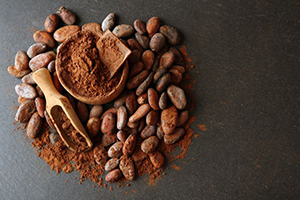

Chocolate
A delícia que faz bem

Bombons Sortidos
Deliciosos Bombons feito com o exclusivo chocolate belga

Copos de Chocolate
Copos feitos de chocolate branco com recheio de nutela

Grãos surpressa
Diversos tipos de grãos cobertos com chocolate meio amargo

Barras Tentação
Barras de chocolate amargo recheada com nozes, passas e frutas cristalizadas

Bolo nega maluka
Bolo de chocolate com recheio de brigadeiro e coberto com chocolate belga
Curiosidades
O cacau ja foi mais valioso que a prata ou o ouro

Sabemos que é difícil de acreditar, mas você sabia que o cacau já foi um produto considerado mais valioso do que a prata ou o ouro? Quando os primeiros navios espanhóis aportaram na América do Sul, os exploradores descobriram que os índios não se importavam tanto com a prata ou o ouro da mesma maneira que valorizavam o cacau. O motivo de tudo isso? O cacau sempre foi considerado pelos índios uma das oferendas mais importantes para os deuses Maias.
As primeiras receitas de chocolate foram criadas pelos Astecas

Cacau e chocolate são duas coisas bem diferentes. Enquanto o primeiro é o nome do fruto que é bastante comum na América do Sul, o chocolate é apenas uma das receitas derivadas dele. Inclusive, o próprio chocolate já sofreu várias alterações em sua receita até alcançar a formulação que tanto conhecemos e amamos.
Quem desenvolveu as primeiras receitas de chocolate foram os Astecas, por volta de 1400, quando dominaram os Maias. Eles preparavam uma bebida à base de cacau, pimenta, água, mel e especiarias que atendia pelo nome de xocoatl (que significava água amarga) ou cacauhalt (água do cacau). Ao longo dos anos, a receita passou por um número significativo de alterações, chegando na formulação sólida e saborosa que conhecemos e amamos.
O cacau é um antioxidante tão poderoso quanto o vinho

Você provavelmente já ouviu falar que tomar uma taça de vinho tinto por dia faz muito bem para a saúde, certo? Mas sabia que o cacau pode ser um alimento tão poderoso quanto o vinho para a sua saúde?
Vale a pena reforçar que, para se beneficiar da ingestão dos antioxidantes do cacau, é mais interessante valorizar o consumo de chocolates feitos com maior concentração desse ingrediente (como os mais amargos) ou então o uso da fruta nas suas receitas!
Faz bem para a disposição e para o coração

O cacau é o principal responsável pelo aumento da produção de serotonina no nosso organismo, quando consumimos chocolate ou receitas que tem esse ingrediente em suas preparações. A serotonina é o hormônio responsável pela nossa sensação de prazer e, por isso, logo após a ingestão de cacau, você se sente mais bem disposto e bem humorado – e é exatamente por isso que indicamos o consumo de chocolate para tratar sintomas da TPM ou até mesmo para auxiliar no controle da depressão.
Essa fruta ainda faz muito bem para o funcionamento do coração, visto que tem ação vasodilatadora e facilita a circulação e distribuição do sangue por todo o corpo.
O nordeste sempre foi a terra do cacau no Brasil
Apesar do cacau ser cultivado inicialmente na Amazônia, onde já existia naturalmente em abundância, foi na Bahia que esse alimento encontrou um alto índice de produtividade e sucesso.
Ilhéus era a cidade responsável por abastecer o país com essa mercadoria, tanto que em 1820 ela era considerada a capital do cacau por causa de seu alto número de fazendeiros e produtores desse alimento. Mesmo após a praga que atingiu a região em 1989 e devastou praticamente todas as plantações da região, a Bahia se reergueu e ainda é responsável por produzir cerca de 95% do cacau originário no Brasil.